En esta lección se proponen soluciones detalladas de los ejercicios (2) de Nextcloud. Se recomienda intentar realizarlos primero sin recurrir a estas soluciones.
Nextcloud (2) 1 - Perfil del administrador
Haga clic en el nombre del usuario situado en la parte superior derecha y elija la opción "Personal".
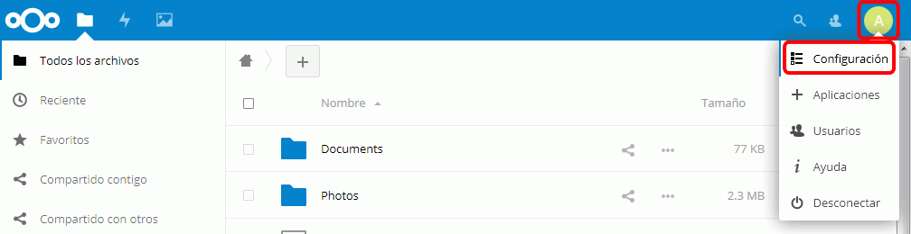
Complete los datos de la ficha personal. Para subir la imagen, haga clic en el icono de flecha.
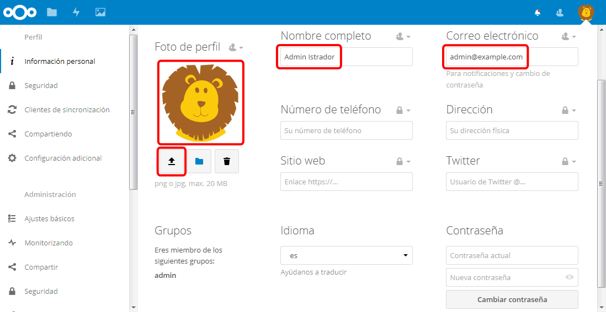
Nextcloud (2) 2 - Crear más usuarios y grupos
Creación de usuarios
Entre en Nextcloud como administrador.
Haga clic en el icono de usuario situado en la parte superior derecha y elija la opción "Usuarios".
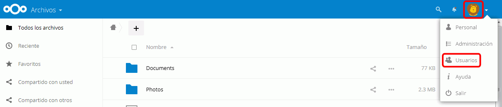
Se mostrará la lista de usuarios.
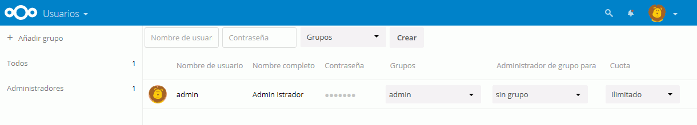
Escriba el nombre y contraseña del nuevo usuario y haga clic en el botón "Crear"..
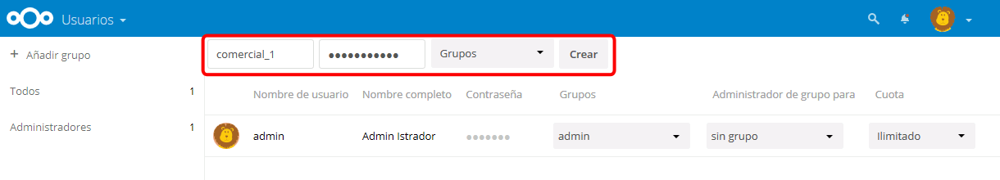
Confirme la operación escribiendo su contraseña de usuario administrador.
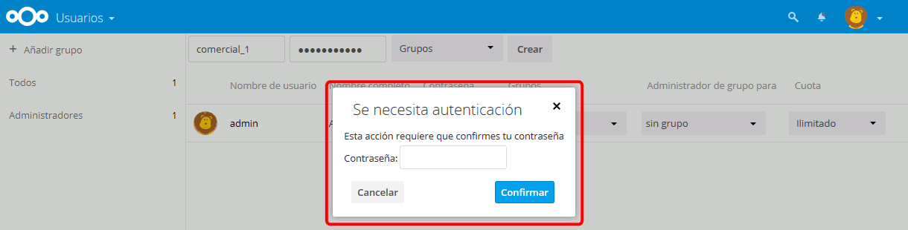
El nuevo usuario se mostrará en la lista de usuarios.
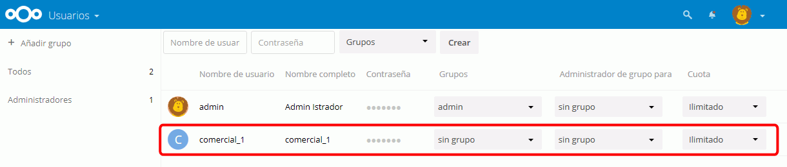
Creación de grupos
Haga clic en "Añadir grupo".
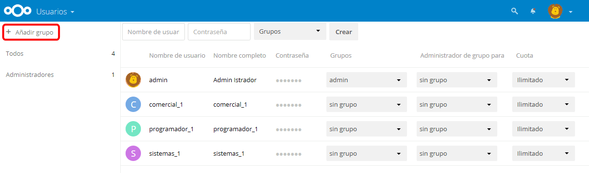
Escriba el nombre del nuevo grupo.
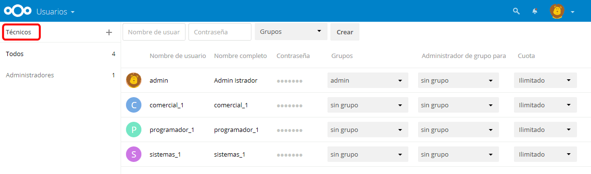
El grupo creado se mostrará en la lista de grupos.
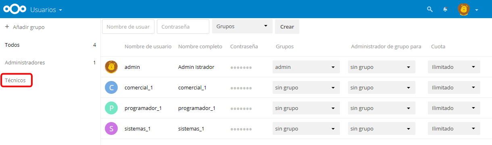
Una vez creados los grupos, asigne cada usuario a los grupos haciendo clic en su columna Grupos.
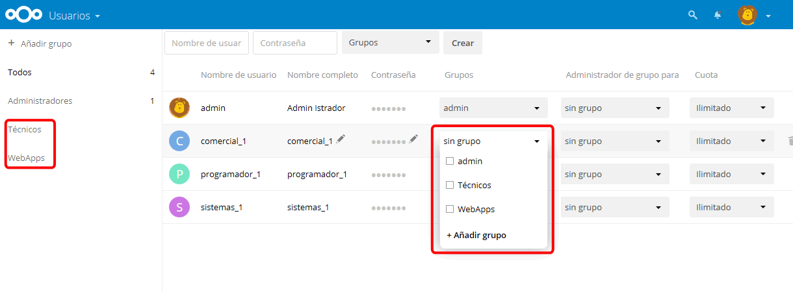
Se mostrarán los grupos a los que pertenece cada usuario.
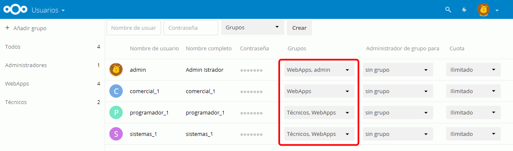
Completar perfiles
Son los propios usuarios quienes pueden completar su perfil. Cierre la sesión como administrador, entre como cada uno de los usuarios y complete el perfil de cada uno. Al volver a entrar como administrador, podrá ver los perfiles actualizados.
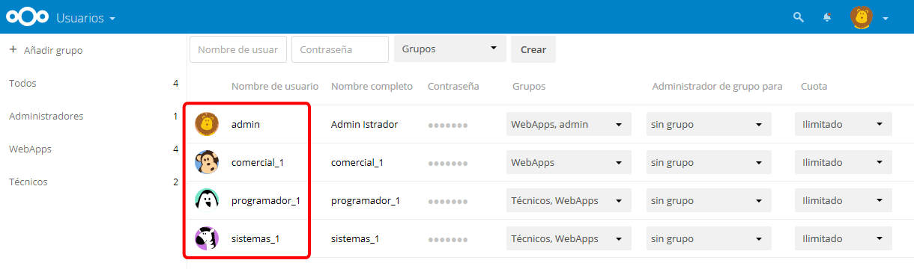
Borrar usuarios
Cree un usuario para borrarlo.
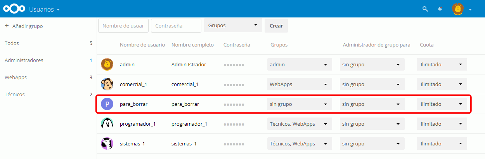
Situando el cursor sobre el usuario se mostrará un icono de papelera en el extremo derecho. Para borrar el usuario, haga clic en el icono.
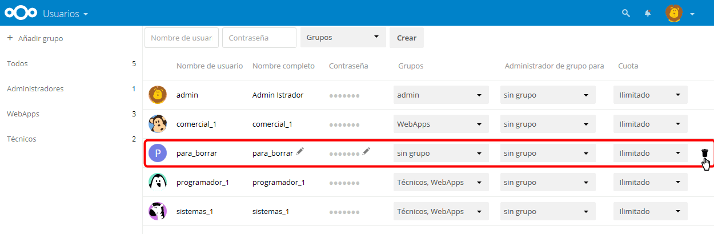
El usuario se habrá borrado de la lista de usuarios
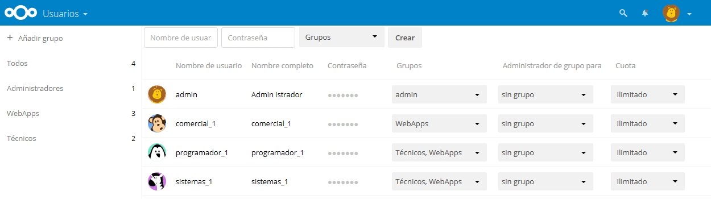
Borrar grupos
Cree un grupo para borrarlo.
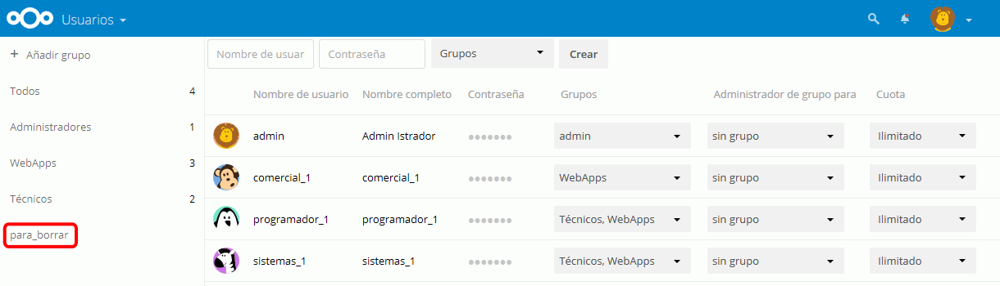
haciendo clic en el nombre del grupo se mostrará un icono de papelera a la dreecha. Para borrar el grupo, haga clic en el icono.
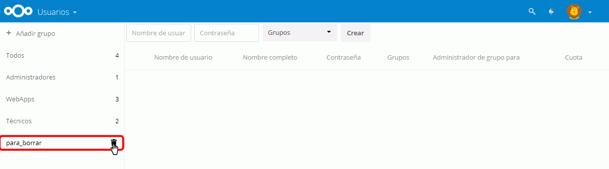
El grupo se habrá borrado de la lista de grupos. El aviso que se muestra durante unos segundo en la parte superior de la pantalla le permitiría deshacer la acción en ese momento.
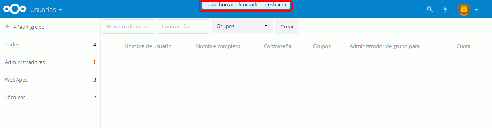
Nextcloud (2) 3 - Subir y compartir ficheros
Por escribir
Nextcloud (2) 4 - Crear y compartir archivos de texto